Role
Programmer
Expertise
C#, UI, Visualstudio
C# Version
2022.3.12f1
2D Unity Project
Fight game Slachs
The Assigment and Goal.
Unity 2D Fighting Game: A Journey of Code Mastery and Animation Artistry
From the beginning of the project's, my primary goal was clear: to push the boundaries of my coding while dunking myself in the world of animation creation. As a developer with a passion for challenges, I saw this adventure as the perfect opportunity to expand my skill set and dive into some unknown territories as I never animated before.
I am eager to experiment with the animator and explore the potential that animation brings as it give the game a more realistic look and a better game experience.
every project carries its own requirements of challenges and skills. you can see these in the picture on your right.
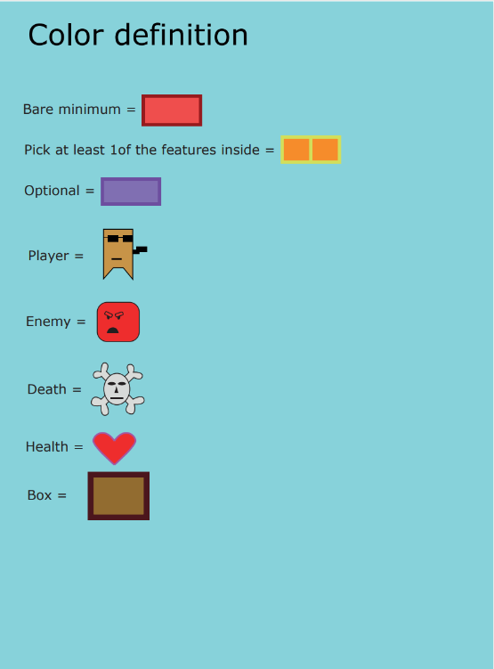
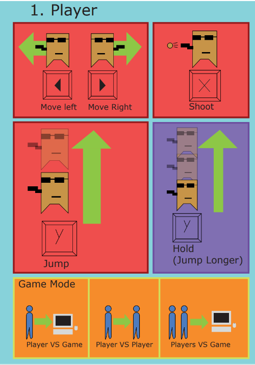
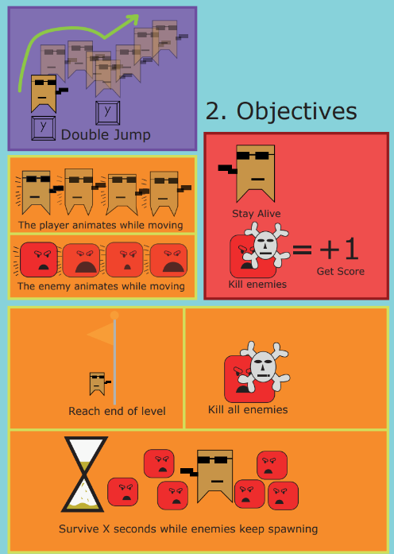
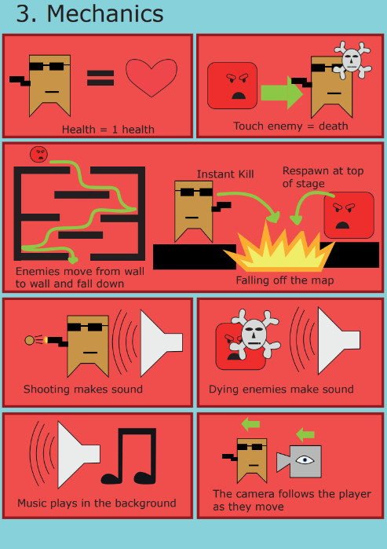
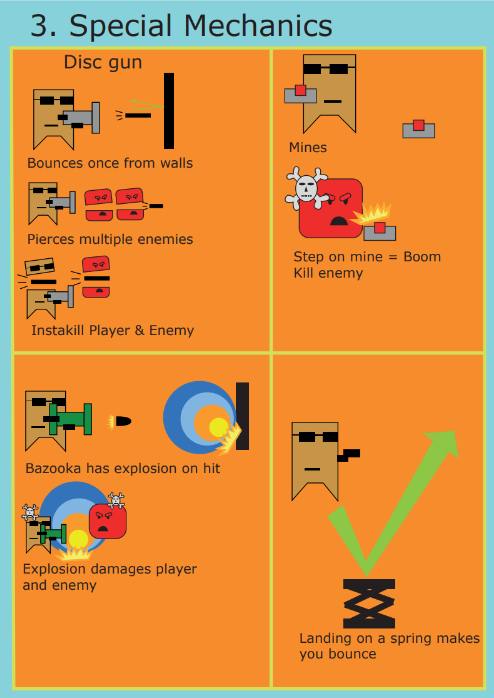
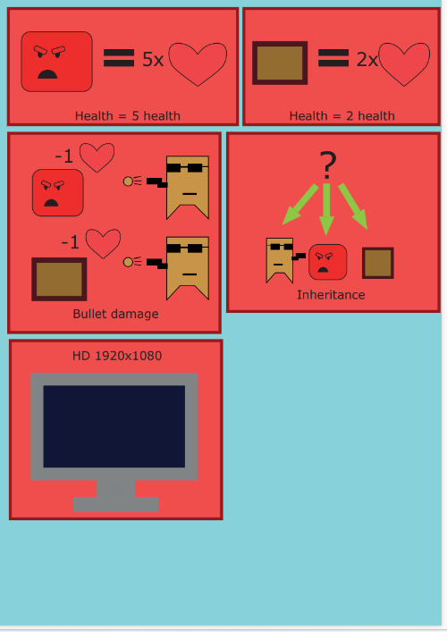
Building a Unity 2D game
making a unity 2d game is obviously a big challenge. At the outset, I faced the task of mastering the intricacies of animation creation. With none experience in this part, I approached it with a mix of curiosity and determination. First i did some research on how animating works and did some practice experimentation, The process was both rewarding and challenging. From making the animations in the animation toolkit till adding them in the players animator. I am really proud how it turned out and how well I picked it up.
I looked for a way to create clearer code and avoid as mush copy paste as possible that would allow for easy extensibility and maintenance. After doing a lot of research i came by the power of inheritance. After some experimenting I was able to create common behaviors, ease the development process and improve code readability. than I came by the challenge of the combat interactions. To address this, I experimented with Unity's physics overlapCircleAll function, using it to detect if an enemy was within range of the player's attacks. By casting a circle collider around the player and checking for overlaps with enemy colliders, I was able to accurately determine enemy closeness, enabling flawless combat engagements and dynamic game play experiences. However, the journey was not without its setbacks. There were moments of frustration and doubt. Yet, with dedication and a willingness to seek help when needed, I overcame these obstacles and I am proud of how it came out.
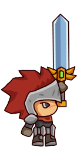 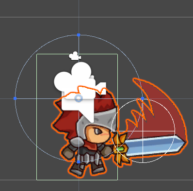Challenges

The journey of developing enemies was a labyrinth of challenges and creative problem-solving. Among the most complicated obstacles was applying attack behavior based on the player's closeness a presentation that required fineness and ingenuity. first I needed for the enemies a customize distance for each attacks according to the player's distance. As I envisioned, when the player was at a steady distance, the enemy would unleash a barrage of fireballs. However, as the player closed in, the enemy's tactics needed to evolve, in a fly attack when the player came even closer that it almost touch the enemy it would start jumping and flying a little away to avoid that the enemy would continuously running into the player.
because of the complexity of the task, witnessing the enemy come to life was extremely disappointing. Seeing the defective transition between different attack patterns, adjusting to the player's movements with stiffness and glitching. I wanted to keep trying implementing these varied attack patterns created a tough challenge. I needed to coordinate the timing and execution of each attack, so it would give it a more smooth transitions between them, seamlessly adjusting the enemy's behavior in real-time based on the player's movements. after days of improving timing, adjusting animations and attacks the transitions became a little smoother and more pleasant to play.
what makes it unique and interesting
My fighting game stands out for its dynamic combat system
where players shape their fighting style with Power-ups. Opponents develop their tactics creating a challenging and unpredictability experience. the animations that gives a more realistic feeling plays an active role in battles. promising an exhilarating and unpredictable gaming experience.
the different but also unpredictable attacks of the enemy give the game a higher degree of difficulty
the attacks are precisely programmed that the enemy keeps attacking but also defending
the diversity of animations gives it a better game experience and more fun to play
the power ups gives the player more diversity of attacks